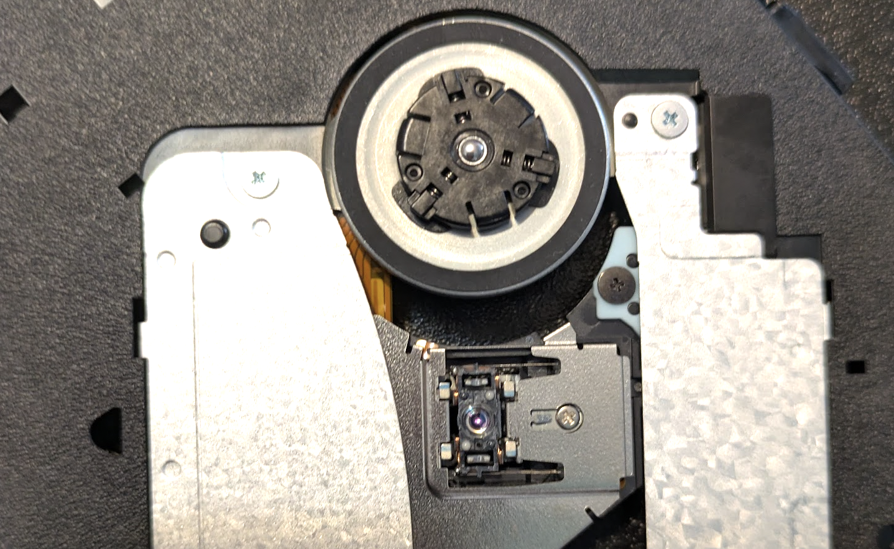
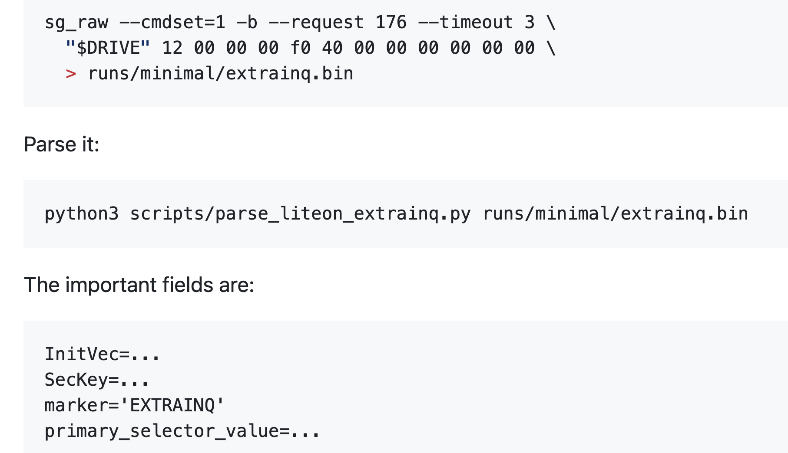
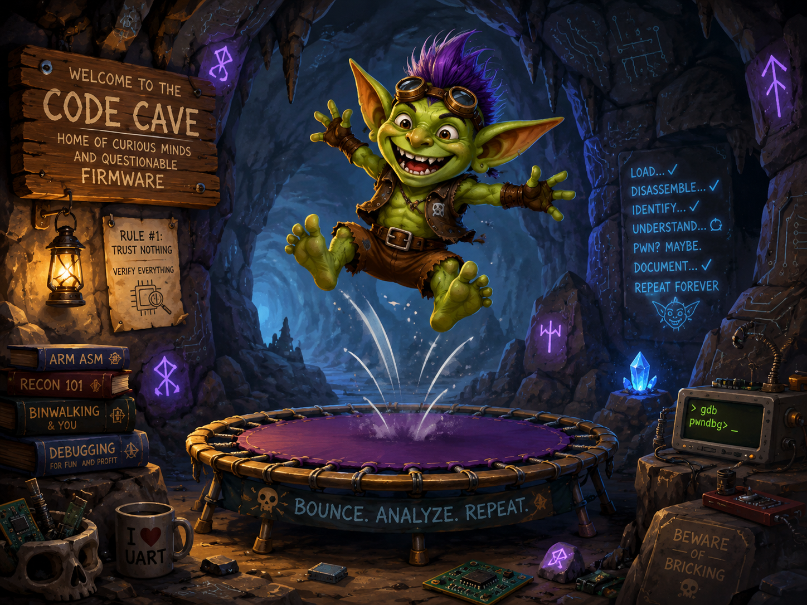
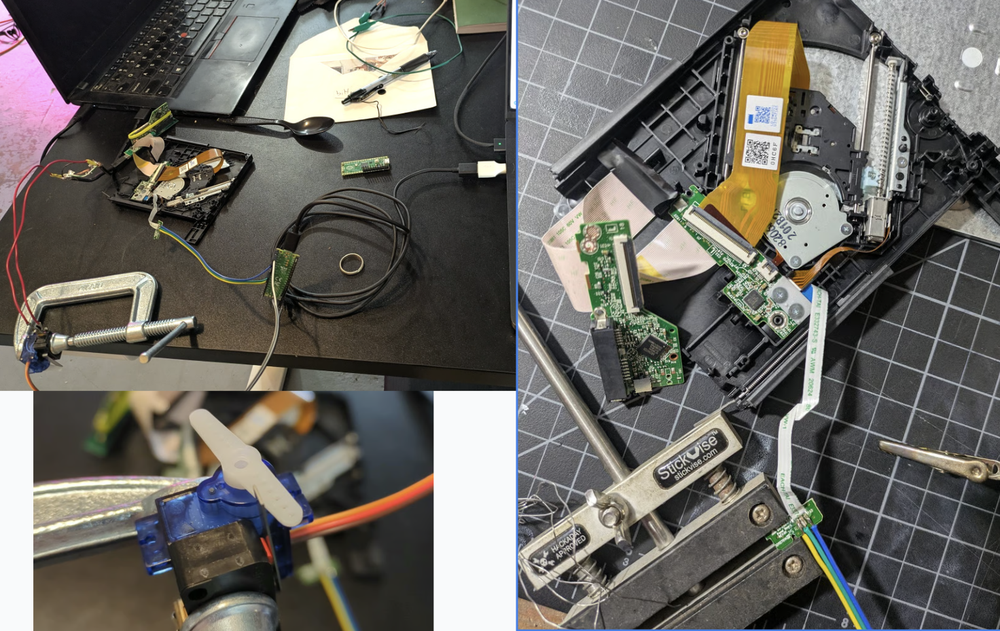

RE of a DVD Drive
Over the past week, I’ve been trying to take control of an external DVD drive, reverse-engineering its firmware and re-programming it to do various things. In this post, I’ll document the journey to date worming our way in and beginning to modify the firmware. This will hopefully be followed by a part 2 using our new-found powers to teach the hardware some tricks.

Why would anyone do this? My inspiration was the coastermelt project by Micah Elizabeth Scott (aka scanlime) 12 years ago, which attempted something similar and phrased the justification in a very compelling way: a DVD drive is a robot! One with multiple motors that can be driven with high precision, multiple lasers and focusing machinery, capable of etching sub-micrometer patterns onto plastic disks… It’s just that we typically only use them to read or write one very specific kind of pattern. If we could only control this amazing hardware, perhaps we could do a lot more!
There have been a few projects that reuse parts from CD/DVD drives to do cool things (example), like leveraging them in microscopy applications. But all of these tend to throw out the existing control circuitry and rebuild their own from scratch. This makes sense (it’s a lot easier), but it does mean that anyone wanting to duplicate the project must also build some extra hardware. Plus, it always felt weird to me - somewhere in here, there is already the right code and circuitry to make these things dance - it’s just that it was never made to be usable for anything besides its original purpose. Anyway, that’s what this project is all about - hacking it to use for our own purposes. Let’s walk through how we get there.
First Contact:
Inside the enclosure is a slimline SATA DVD drive module (model DS-8ABSH, which you can also buy standalone on Amazon for ~$30). It is connected to a USB-to-SATA adapter that has also been crammed into the enclosure, with a USB cable that you can then plug into your laptop. It shows up as a disk drive, and speaks SCSI - a standard way computers communicate with storage media of various kinds. It’s not uncommon for manufacturers to use extra, secret, undocumented SCSI commands as a sort of hidden communication channel for things like firmware updates - and so initial work included messing about seeing if there were any that produced interesting responses (and ejecting the drive or causing weird noises a lot in the process).

At some point we dug up an old firmware update program, designed for DOS and Windows. Poking around in the binary, along with our scans, revealed a few special SCSI commands - including one which gave some Lite-On specific metadata, and one that let us dump a 1MiB firmware window. The firmware was encrypted, but the EXTRAINQ info gave the pieces needed to derive the AES key and IV and decrypt it, giving us our first look at (some of) the code running in the device.
The first chunk of that was 8051 assembly code, which I could load into Ghidra to decompile and feed to Codex to start exploring. We quickly spotted some promising-looking bits - now the question was, could we modify this and start running our own code instead?
Updaters in The Matrix
We needed to know the full sequence of steps involved in a firmware update, and after some guesswork based on static analysis of the DOS updater got us nowhere, we decided to run the program in a little simulated world where we could inspect exactly what it was sending during the process.
Pretty soon, we had the process mapped out well enough to replay an update with the firmware we’d dumped. But when we tried to make modifications, nothing happened. The process would run fine, we could even read the modified firmware back out - but nothing we did seemed to change much. In desperation, we even thought that the USB-SATA bridge might be filtering some key command, and I opened up an old MacBook from a friend to wire in the drive directly - no luck.

Alas, it wasn’t a missing ‘commit’ command after all: it turns out that there’s a firmware integrity step that happens before the drive allows new firmware to be written, and we were failing it. I even had a pretty good guess as to which set of bytes was the key checksum/stamp of approval, but it wasn’t anything simple that we could guess at. Here’s one place where having a tireless AI agent came in clutch. Codex searched relentlessly, finding a handful of updaters for different variants of this drive and others in the same family. Then it patched and re-patched our wine shim, adding more and more functionality as needed to convince these update utilities that they were programming drives, extracting out 5 or 6 ‘sibling’ firmware images (each with their own encoding nuances and tricks required) so that at the end we had a set of similar binary files we could compare.
Sure enough, those 14 bytes seemed like some sort of key/checksum, but no theory we could come up with revealed what, and despite a ton of work, we couldn’t find anything in any of the updater programs to help us out, nor could we see any code that checked it in the visible 8051 firmware. Still, at least these sibling images would come in handy as references later. For now, we faced a block - if we can’t modify the code, the project is sunk!
Papers Please: Bypassing Firmware Integrity Checks
We discovered that the official updater sends a separate profile-tail payload, which is essentially an 8051 helper overlay. By changing three bytes in this helper, we turn off a conditional and force the success path - sidestepping the firmware validity check entirely! So, now we can write whatever firmware we like…
Code Caves and Trampolines
The next step requires us to tread carefully. We’re planning to modify firmware that we don’t understand - a wrong step could leave the drive unresponsive and ‘bricked’. The standard approach here uses two delightfully named concepts. A code cave is a region that we can safely mutate - for example, we have a little 221-byte chunk of FFs at 0x6ee3 that can be safely over-written. We can write a piece of code there, and then patch some function somewhere to jump there (hence ‘trampoline’), execute our code, and then bounce back to where it was.

For example, a cautious first step added a delay function in the code cave and then triggered it during the update process while timing the different stages, giving a measurable timing difference. Next was reading out a single bit by conditionally setting an error state. Finally, we made something actually useful - patching the currentboot identity handler (0x4fc9) and using our code to modify the identity string. Now, we could issue a SCSI request and get back a customized response, which let us dump out data such as memory snapshots much faster than the one-bit-per-firmware-update early attempts.
Later on, this same idea was used to test all kinds of different hypotheses - we can do anything - as long as it fits in 221 bytes :)
Hardware Twiddling and Mysterious CDDs
We can see some 8051 code, but there’s also this big chunk that is encoded in some weird way. We tried a ton of different guesses, with no real luck. One thing stood out in the format/layout: a suspicious resemblance to some DVD encodings. The theory is that it uses some internal silicon decoder as part of the process.

It took a while, but eventually we were able to map out some of the code path responsible for ‘decoding’ this into code/data at runtime, and build a helper to let us use the on-chip decoding path to slowly read out the materialized CDD contents one chunk at a time. Each run required power cycling the drive - fortunately, I’d long ago hooked up some circuitry to let Codex trigger a physical disconnect of the drive at will rather than relying on my meat fingers to do the boring labor. Unfortunately, those reads don’t see the full picture, only slices of the working window containing a few snippets of code. And our code runs in a different context to the normal execution, so couldn’t ever materialize the full, decoded block.
Still - the hardware cold reboot was useful for various parts of this. I later added another line that let me fake the switch that detects whether the sled is inserted, so that we could fake eject/insert operations with code as well. These hardware mods are useful for reverse engineering, but hopefully won’t be needed by anyone attempting to follow in my footsteps.
The State Of Things
TODO we still can’t fully decode CDDs. Can move sled around with standard SEEK(), and have hacks to spin drive, toggle laser and other party tricks but no proper full low-level control yet for things like focus / positioning.
TODO write better narrative arc, were we doomed, recovery, more details of various bits.
Actually, those TODOs capture it well. I have a few bricked drives, a few in various states of disassembly and functionality. And despite lots of head-banging, we don’t know how to fully decode or modify the controller code that would unlock further progress. I’m pausing this project for now.
Magic AI and The Inevitable Pit of Despair
~All of the code for this was written by Codex, with me steering and chiming in occasionally but otherwise mostly letting it go and making sure it had all the tools needed to explore ideas. This project specifically is one I’ve long had in mind as a sentinel of progress. Past models, even quite recently, made ~0 progress, so it was amazing to see codex (with some opus help) blast through the blockers one by one and make a ton of headway.
As with any AI project pushing up against the ceiling of what models are capable of, there came a time when progress began to slow and I found myself going in circles a little. It can be easy to get stuck here - “one more prompt will surely fix it” is a the natural feeling, one that I think causes lots of burnout and pain when people (myself included) miss the signs. I’ll be honest - this time around I noticed, but kept going past that point without snapping out of it - which is why I only have 2.5 drives out of four in working order!
When faced with this block, there are a few tricks you can try: - Wait for better models - Package up the core question and ‘ask the council’ - GPT 5.5 Pro, Opus 4.7, even Grok - you can ‘live in the future’ a little by leaning on the top tier models in aggregate. Sometimes this is just enough to break through some barrier - Actually do some work. A nice option if you do have the skills for it :) - Find a way around, approaching things from a different angle or working on some other aspect for a while.
In my case, a combination of fresh ideas from Pro, fresh motivation from me, and the addition of some DVDs to open up new code paths to explore broke the first deadlock and got us moving again, but now in the CDD decoding puzzle I sense a limit and will take a break rather than pushing in circles any further.
Conclusions
The original coastermelt project made a huge impression on me in high school - it’s a tour de force of RE, and introduced me to many ideas including the very concept of interactive disassembly, bit banging serial communications via a button/LED pins, the power of soldering on very tiny wires, etc etc. It inspired me to get into embedded engineering, and was one of the motivating factors behind my own RE journey - not that I ever reached anywhere close to scanlime’s level.
There’s a lot of hype around AI for cyber stuff at present, thanks to scary tales of Mythos’ exploits and high-profile vulnerabilities being reported at a scary rate. Seeing these models step through the RE workflows I’ve long associated with only a handful of experts was certainly eye-opening. We’re not at the “as good as an elite hardware hacker” level yet, but it suddenly feels in reach. And this heralds an exciting world where curious hackers can tinker with their devices, but also a scary one where less benign individuals could compromise the peripherals and embedded devices that surround us - and unlike your phone OS, it is unlikely that the good guys will be able to patch every old mouse, hard drive and wifi router sitting around in our houses!
Anyway, I hope you found this interesting. If you want to read more on how the code works, or try it yourself, I’ve dumped ~everything on github - start here. As mentioned, I’m hoping this is only the start and that at some point I’ll get proper control and make the hardware do some tricks… Hopefully see you in a future post soon :)